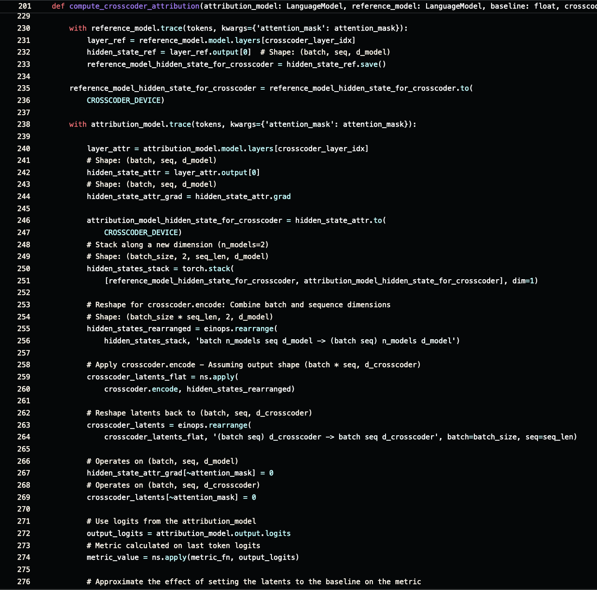
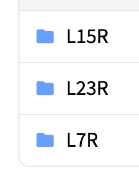

ArXiv
Preprint

Source
Code
Github

Trained
Crosscoder
Weights
Why do reasoning models 'wait'?
Prior work has shown that a significant driver of performance in reasoning models is their ability to reason and self-correct. A distinctive marker in these reasoning traces is the token 'wait', which often signals reasoning behavior such as backtracking.
In this work, we address the question whether a model's latents (internal states) preceding 'wait' tokens contain relevant informa- tion for modulating the subsequent reasoning process. We train sparse crosscoders at multiple layers of DeepSeek-R1-Distill-Llama-8B and its base version, and introduce a latent attribu- tion technique in the crosscoder setting. We lo- cate a small set of features relevant for promot- ing/suppressing 'wait' tokens' probabilities. Finally, through causal interventions, we show that many of our identi- fied features are relevant for the reason- ing process and give rise to different types of reasoning patterns such as restarting from the beginning, recalling prior knowledge, and expressing uncertainty.
How to find reasoning features?
To discover features, we first train sparse crosscoders, a technique that jointly decomposes activations from two different models (a base model and a reasoning-finetuned model). This allows us to classify their learned features into three categories: base-only, shared, and reasoning-finetuned. We then apply latent attribution patching to filter for features that strongly modulate the 'wait' token. This gives us a 'top 50' list (features that promote 'wait') and a 'bottom 50' list (features that suppress 'wait').
Where do 'wait'-related features come from?

What do these features do? (Causal Steering)
To test the causal impact of these features, we perform activation steering. We add the feature's direction vector back into the model's residual stream (at layer 15) during generation to see how it changes the output.
Downstream Evaluation on MATH500
We evaluated the impact of steering on the MATH500 dataset. We steered with four specific features (one 'top' and three 'bottom') on 100 problems. This table shows the change in accuracy (Acc), median token length, and adherence to the steering direction.
What information do the features contain? (Patchscope)
As an additional check, we used Patchscope, an intermediate decoding technique, to investigate the information contained in our selected features. We compute the average next-token distribution for the top and bottom feature groups.
How to cite
The paper can be cited as follows.
bibliography
Dmitrii Troitskii, Koyena Pal, Chris Wendler, Callum Stuart McDougall, Neel Nanda. "Internal states before 'wait' modulate reasoning patterns." arXiv preprint arXiv:2510.04128, 2025.
bibtex
@inproceedings{troitskii-etal-2025-internal,
title={Internal states before wait modulate reasoning patterns},
author={Troitskii, Dmitrii and Pal, Koyena and Wendler, Chris and McDougall, Callum Stuart},
booktitle={Findings of the Association for Computational Linguistics: EMNLP 2025},
year={2025}
}